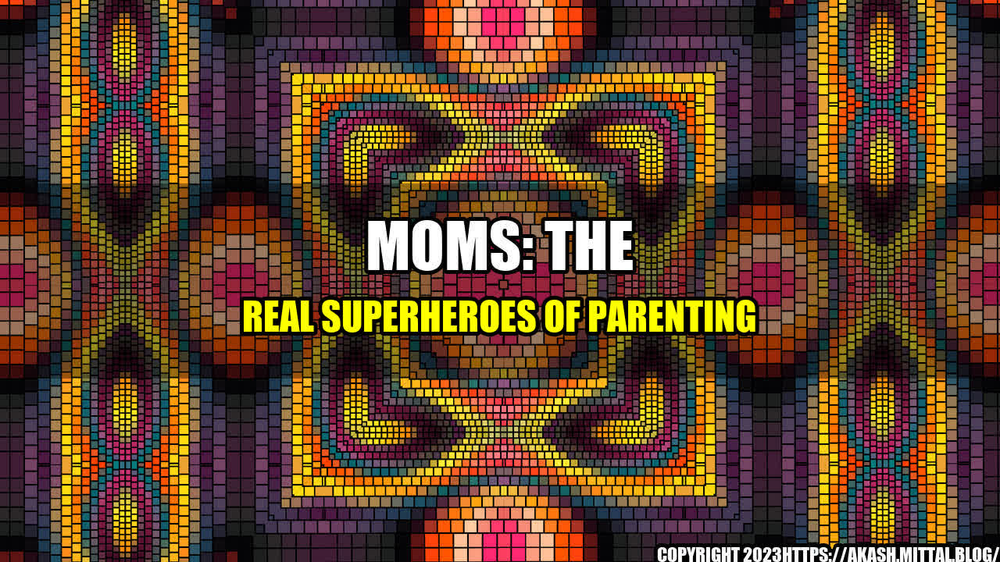

Moms: The Real Superheroes of Parenting

No matter your parenting status we can all agree that moms are superheroes. They possess innate abilities that allow them to multitask, problem-solve, and remain calm in even the most chaotic situations.
How One Mom's Quick Thinking Saved the Day
One example of a mom's superhero abilities was demonstrated by Sarah, a working mom of three. One afternoon, while running errands with her children, she suddenly noticed that one of her kids was missing.
Instead of panicking, Sarah immediately sprang into action. She instructed her other children to stay put while she searched frantically for her missing child. Thanks to her quick thinking and superhero instincts, the missing child was located within minutes, safe and sound.
Mom's Superpowers
Moms possess a number of impressive superpowers that are easy to quantify:
- Ability to multitask: Moms are often able to juggle multiple tasks at once, such as cooking dinner while helping with homework and soothing a crying baby.
- Problem-solving skills: From fixing broken toys to dealing with potty training accidents, moms are skilled problem-solvers who can quickly assess a situation and come up with a solution.
- Calm under pressure: Whether it's dealing with a tantrum in public or navigating a difficult conversation with a teenager, moms have the ability to remain calm and focused in even the most stressful situations.
The Title Matters: Moms are Superheroes
The title of this article was chosen purposefully to be magnetic and eye-catching. Moms truly are the superheroes of parenting, and it's important to recognize and celebrate their incredible contributions.
Conclusions: Moms Keep It Real
To summarize, here are three key reasons why moms truly are the superheroes of parenting:
- They possess superpowers such as multitasking, problem-solving, and remaining calm under pressure.
- They have the ability to quickly think on their feet and make split-second decisions that can save the day.
- They keep it real, sharing their stories and struggles with other moms in order to create a supportive and understanding community.
and Case Studies
In addition to the quantifiable examples listed above, it's also important to share personal anecdotes and case studies in order to illustrate these points. One example might be a working mom who successfully balances her job and family responsibilities on a daily basis, despite numerous challenges and obstacles.
Practical Tips for Moms
Finally, it's important to provide practical tips when possible. Some tips for moms might include:
- Setting realistic expectations for yourself and your family
- Asking for help when you need it
- Finding a supportive community of other moms
References and Hashtags
References:
- https://www.parents.com/parenting/moms/
- https://www.today.com/parents/moms-say-they-need-some-satisfaction-guilt-my-plate-t22901
- https://www.scarymommy.com/
Hashtags and SEO keywords:
- #momsaresuperheroes #parenting #workingmom #momlife #momproblems #momstruggles #parentingadvice #momadvice #momtips #supportivecommunity #momlove #raisingkids #mompreneurs #momming
Curated by Team Akash.Mittal.Blog
Share on Twitter Share on LinkedIn